Что это и зачем
Neiry Band — это носимый нейроинтерфейс. Проще говоря — повязка на голову, которая считывает электрическую активность твоего мозга (ЭЭГ) и сердечно-сосудистые показатели (пульс, вариабельность сердечного ритма).
Neiry Capsule — это программа на компьютере, которая принимает данные с трекера, обрабатывает их и показывает тебе в реальном времени: насколько ты сконцентрирован, расслаблен, устал, в стрессе, в состоянии потока.
Зачем это в контексте ONTO NOTHING: мы используем Neiry как инструмент верификации практики. Когда ты останавливаешь внутренний диалог — мозг меняет свою активность. Neiry Capsule фиксирует эти изменения объективно, в цифрах. Это не про «верю / не верю» — это про данные.
Что в комплекте — распаковка
Когда ты получаешь трекер Neiry, в комплекте обычно находятся:
- Сам трекер (headband) — мягкая повязка с электродами и электронным модулем
- Кабель для зарядки (micro-USB или USB-C — зависит от модели)
- USB Bluetooth-адаптер — на случай, если в твоём компьютере нет встроенного Bluetooth
- Инструкция (краткая, от производителя)
Что проверить при распаковке:
- Трекер не повреждён, электроды на месте (четыре сухих электрода на внутренней стороне)
- Кабель зарядки подходит к разъёму на трекере
- Трекер заряжается (при подключении к зарядке должен загореться индикатор)
Физическое устройство — осмотр, слабые места, предосторожности
Элементы трекера
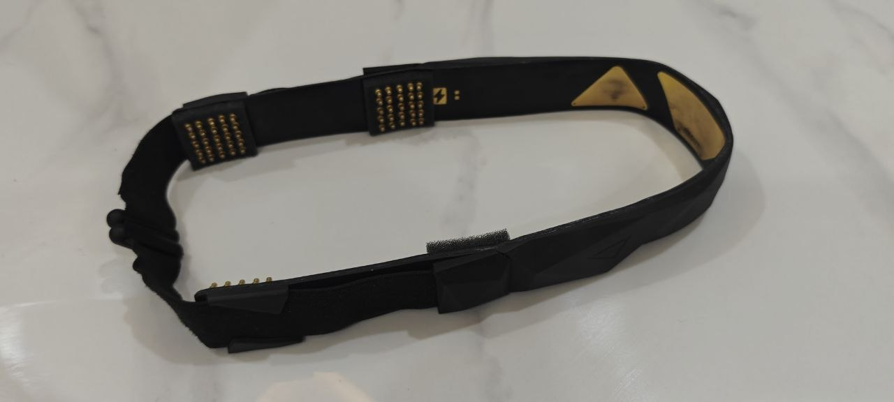
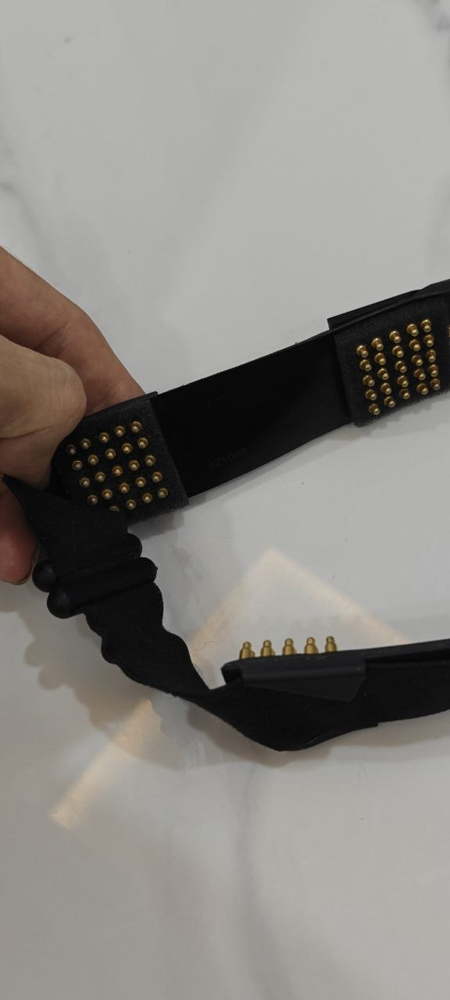
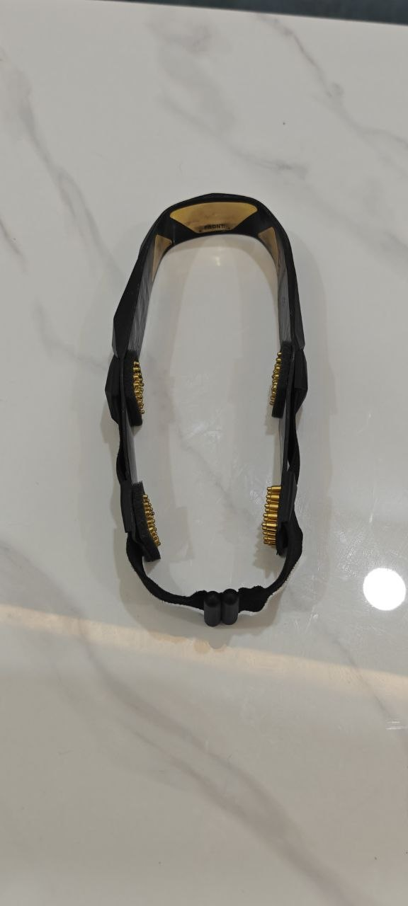
- Электроды (4 штуки): расположены на внутренней стороне повязки. Они считывают ЭЭГ-сигнал. Обозначения: O1, O2 (затылочная область), T3, T4 (височная область). Это сухие электроды — гель не нужен.
- PPG-датчик: оптический датчик пульса (золотистые треугольные элементы). Светит в кожу и измеряет изменения кровотока.
- Кнопка питания: одна физическая кнопка на застёжке. Ей включаешь, выключаешь и вводишь в режим сопряжения.
- Индикатор (светодиод): показывает состояние устройства через частоту мигания.
- Серийный номер: находится на центральном модуле с внутренней стороны трекера. Это 6-значный числовой код (например, 821049). Он понадобится для получения ключа активации. Запиши или сфотографируй его сейчас.
Слабые места — на что обратить внимание
- Электроды — не царапайте и не трите их абразивными материалами. Если на них скапливается налёт (кожное сало, пот) — протирайте мягкой тканью, слегка смоченной спиртом или антисептиком. Грязные электроды = плохой контакт = некорректные данные.
- PPG-датчик — оптическое окошко должно быть чистым. Не закрывайте его наклейками, не трогайте пальцами линзу.
- Кабель зарядки — не заряжайте трекер во время использования. Сначала зарядите, потом используйте.
- Bluetooth-модуль — трекер общается с компьютером только по Bluetooth. Радиус действия ограничен (~5-10 метров). Не уходите далеко от компьютера во время замера.
- Повязка — не растягивайте чрезмерно. Ткань со временем может растягиваться, и контакт электродов с кожей ослабнет.
Предосторожности от Константина Шель
- Не используйте трекер с мокрой головой — после душа подождите, пока волосы высохнут. Влага меняет проводимость и искажает данные.
- Снимайте трекер при головной боли, головокружении или любом дискомфорте. Трекер — пассивное устройство, он ничего не излучает в мозг, но физическое давление повязки может усилить дискомфорт.
- Храните трекер в сухом месте, не оставляйте на солнце. Электроника не любит жару и влагу.
- Заряжайте трекер перед замером. Если заряд батареи ниже 15% — качество передачи данных может снижаться. Программа показывает уровень заряда (Battery) после подключения.
- Не трогайте электроды и PPG-датчик руками непосредственно перед замером — жир с пальцев ухудшает контакт.
Скачивание программы Capsule
Программа Neiry Capsule распространяется через официальный Telegram-канал.
Шаг за шагом:
- Откройте Telegram-канал Neiry Capsule: t.me/neurocapsule
- Пролистайте канал и найдите последний пост со ссылкой на скачивание программы
- Обязательно прочитайте текст поста целиком перед скачиванием — там могут быть важные примечания по текущей версии, известные баги, инструкции по обновлению
- Скачайте архив по ссылке из поста
Установка программы
Что внутри архива
После скачивания и распаковки архива вы увидите две папки:
| Папка | Для кого | Что внутри |
|---|---|---|
| CapsuleAPI | Для разработчиков | API для интеграции — вам это НЕ нужно |
| CapsuleAppReleases | ВАМ СЮДА | Основная программа Capsule |
Выбор платформы
Откройте папку CapsuleAppReleases. Внутри — папки для разных операционных систем:
- Windows — для Windows 10/11
- macOS — для Mac с процессором Intel
- ARM — для Mac с процессором Apple Silicon (M1, M2, M3, M4)
Как узнать какой у вас Mac: Нажмите на яблочко (Apple) в левом верхнем углу экрана → «Об этом Mac». Если в строке «Чип» написано «Apple M1/M2/M3/M4» — выбирайте папку ARM. Если написано «Процессор: Intel» — выбирайте macOS.
Запуск
- Windows: откройте папку Windows, найдите .exe файл, запустите его.
- Mac: откройте соответствующую папку, найдите файл приложения (.app). При первом запуске macOS может заблокировать его — см. раздел Типичные проблемы.
Bluetooth — обязательное условие
Программа общается с трекером только через Bluetooth. Убедитесь, что:
- Bluetooth включён на вашем компьютере
- Если встроенного Bluetooth нет (часто бывает на стационарных ПК) — вставьте USB Bluetooth-адаптер из комплекта
Получение ключа активации
Для работы программы нужен лицензионный ключ. Он привязывается к серийному номеру вашего трекера и вводится один раз при первом запуске.
Как получить ключ:
Шаг 1 — Напишите на почту команде Neiry:
Отправьте письмо на почту команды Neiry (адрес указан в канале) с запросом ключа. В письме укажите:
Прошу ключ активации Capsule Почта: вашапочта@gmail.com Серийный номер: sn XXXXXX
Где XXXXXX — ваш 6-значный серийный номер с внутренней стороны трекера.
Шаг 2 — Для ускорения: продублируйте запрос в комментариях канала:
- Откройте канал t.me/neurocapsule
- Найдите последний пост со ссылкой на скачивание
- В комментариях к этому посту напишите то же самое сообщение (почта + серийный номер)
Это ускорит получение ключа — ребята из Neiry увидят ваш запрос в двух местах.
Если возникли сложности — бот технической поддержки Neiry:
Напишите в бот: t.me/neirybot
Сохраните ключ!
После получения ключа сохраните его в надёжном месте (заметки, файл, менеджер паролей). Ключ вводится один раз, но если вы переустановите программу — он понадобится снова.
Включение и сопряжение трекера
Перед тем как работать в программе, нужно подключить трекер к компьютеру по Bluetooth. Это делается в два этапа: сначала включаем трекер и вводим его в режим сопряжения, потом находим его на компьютере.
Шаг 1 — Включение трекера
Зажмите кнопку питания на трекере на 2 секунды.
Как понять, что трекер включился: индикатор начинает мигать зелёным, 1 раз в секунду (медленное мигание).
Шаг 2 — Режим сопряжения
Не отпуская, зажмите кнопку питания ещё раз на 4 секунды.
Как понять, что трекер в режиме сопряжения: индикатор начинает мигать быстро — 4 раза в секунду (частое мигание).
Шаг 3 — Поиск и подключение на компьютере
- Откройте настройки Bluetooth на вашем компьютере:
- Windows: Параметры → Bluetooth и устройства → Добавить устройство
- Mac: Системные настройки → Bluetooth
- Дождитесь, пока в списке найденных устройств появится headband (или Neiry Headband)
- Нажмите «Подключить» / «Pair»
- После успешного сопряжения индикатор на трекере изменит поведение — мигание станет более ровным или индикатор загорится стабильно
Шаг 4 — Подключение в программе Capsule
После сопряжения через систему — откройте программу Capsule. Трекер должен определиться автоматически. Вы увидите:
- IsConnected: true — устройство подключено
- Battery — уровень заряда (должен быть >15%)
- Serial — серийный номер вашего устройства
Если трекер не определяется — см. раздел Типичные проблемы.
Как правильно надеть трекер
Правильная посадка трекера — это 80% успеха замера. Неправильно надетый трекер = артефакты, шум, некорректные данные.
Расположение
Повязка надевается на голову так, чтобы:
- Электроды O1 и O2 — располагались на затылке, чуть выше затылочного бугра (той выступающей косточки сзади внизу головы). Это зона зрительной коры — основной источник альфа-ритма.
- Электроды T3 и T4 — располагались на висках, примерно на уровне верхнего края ушной раковины. Это височная область.
- PPG-датчик — должен плотно прилегать к коже (обычно расположен рядом с одним из электродов).
Обеспечение контакта
- Волосы: уберите волосы из-под электродов. Волосы между электродом и кожей = изоляция = плохой сигнал. Если волосы длинные — раздвиньте их в местах контакта пальцами, затем прижмите электрод к коже.
- Прижим: повязка должна сидеть плотно, но комфортно. Не давить, но и не болтаться. Если повязка скользит — она слишком свободная.
- Кожа: электроды работают лучше на чистой коже. Если кожа очень сухая — можно слегка протереть места контакта влажной салфеткой (не мокрой).
Проверка качества контакта
После подключения в программе Capsule вы увидите значения импеданса для каждого электрода (O1, T3, O2, T4), измеренные в кОм:
- До 100–300 кОм — нормальный контакт для сухих электродов
- Выше 300 кОм — контакт слабый, данные могут быть зашумлены. Попробуйте поправить повязку, убрать волосы, прижать электрод плотнее.
Также обратите внимание на поле Artifacts:
- No — сигнал чистый, всё хорошо
- Yes — в сигнале есть помехи. Если артефакты постоянные — проверьте посадку трекера
Что вызывает артефакты (помехи)
- Движения головой
- Напряжение мышц лица (лоб, челюсть)
- Частое моргание
- Разговор во время замера
- Плохой контакт электродов
- Электрические приборы рядом (мониторы, зарядные устройства)
Первый запуск программы
Что вы видите при запуске
Не пугайтесь — интерфейс программы выглядит сложным. На экране много графиков, цифр и панелей. Это нормально. Для начала вам нужны только несколько вещей.
При первом запуске вы увидите экран авторизации:
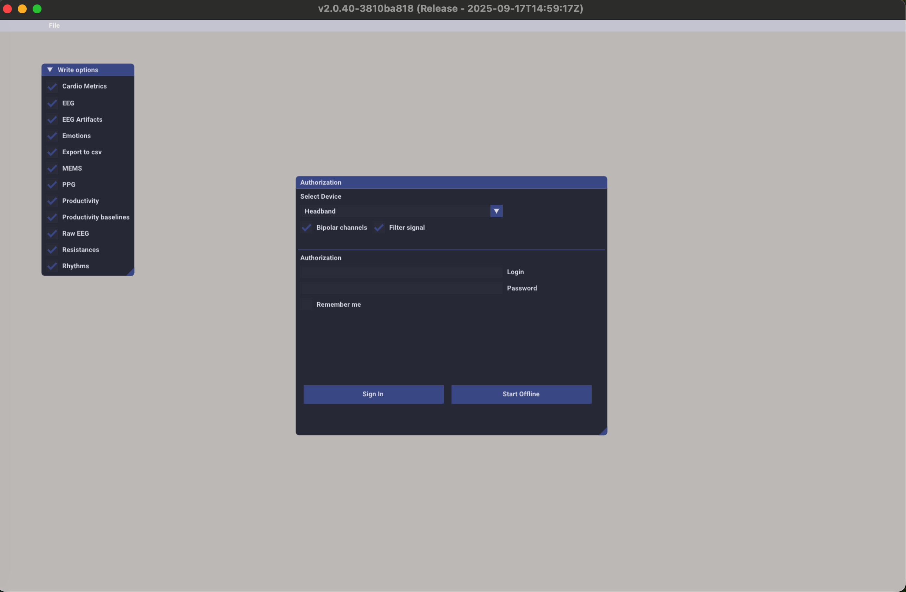
Режим входа
- Start Offline — работа без аккаунта. Выбирайте этот вариант, если вам не нужна облачная синхронизация.
- Вход с логином — если у вас есть аккаунт Neiry.
Ввод лицензионного ключа
Если программа запросит лицензионный ключ — вставьте ключ, который вы получили в шаге 6. Это делается один раз.
Настройка Write Options — что записывать
Обратите внимание на панель Write Options в левой части экрана. Это критически важная настройка — она определяет, какие данные будут записываться в экспортный CSV-файл.
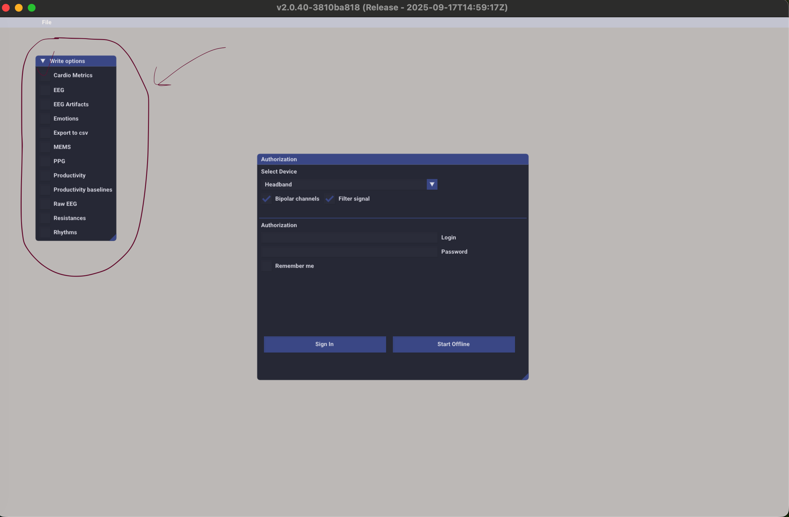
Прожмите ВСЕ галочки:
| Галочка | Что записывает |
|---|---|
| Cardio Metrics | Пульс, вариабельность сердечного ритма, стресс-индекс Баевского |
| EEG | Основные ЭЭГ-метрики (мощности ритмов, индексы) |
| EEG Artifacts | Информация о наличии артефактов в каждый момент времени |
| Emotions | Шкалы эмоций (Attention, Relaxation, Cognitive Load, Cognitive Control) |
| Export to csv | Обязательно! Без этого данные не экспортируются |
| MEMS | Данные акселерометра и гироскопа (положение головы) |
| PPG | Сырой сигнал фотоплетизмограммы |
| Productivity | Fatigue Score, Concentration Index, Relaxation Index, Alpha Gravity |
| Productivity baselines | Базовые значения продуктивности (после калибровки) |
| Raw EEG | Сырой ЭЭГ-сигнал (для глубокого анализа) |
| Resistances | Импеданс электродов (качество контакта) |
| Rhythms | Мощности альфа/бета/тета/дельта ритмов |
Проверка подключения
После подключения трекера вы увидите основной дашборд программы:
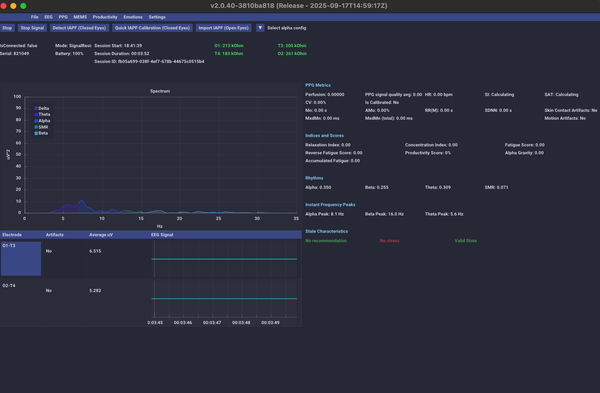
Убедитесь, что в интерфейсе отображается:
| Поле | Что должно быть | Где находится |
|---|---|---|
| IsConnected | true | Левый верхний угол |
| Battery | >15% | Рядом с IsConnected |
| Serial | Ваш серийный номер | Там же |
| Mode | SignalRes | Рядом с Battery |
Если IsConnected = false — трекер не подключён. Вернитесь к шагу 7.
▶ Видео-обзор интерфейса программы Capsule (Яндекс.Диск)В видео показан обзор интерфейса программы. Единственное, чего нет в видео — это шаги по сопряжению трекера и подключению Bluetooth, они описаны выше в шаге 7.
Калибровка — самый важный шаг
Калибровка — это процесс, в котором программа определяет ваши индивидуальные базовые показатели. У каждого человека свой «нормальный» уровень мозговой активности, пульса, вариабельности ритма. Калибровка фиксирует вашу личную точку отсчёта — baseline (медиану ваших показателей в спокойном состоянии). Все дальнейшие измерения будут показывать отклонение от этой нормы.
Программа различает три этапа калибровки:
- Калибровка IAPF (индивидуальная альфа-частота)
- Калибровка бейслайнов (базовые метрики)
- Калибровка кардиометрик (происходит автоматически)
Шаг A — Quick IAPF Calibration (калибровка альфа-частоты)
Найдите в верхней панели программы кнопку Quick IAPF Calibration (Closed Eyes):
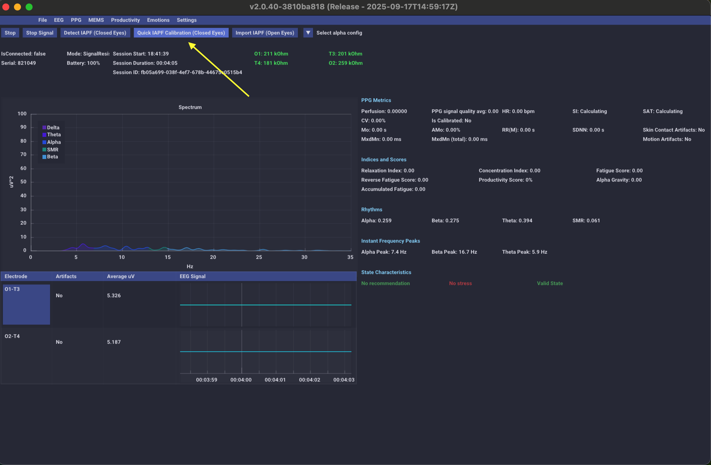
Порядок действий:
- Нажмите кнопку Quick IAPF Calibration (Closed Eyes)
- Закройте глаза
- Расслабьтесь. Сидите спокойно. Не думайте ни о чём специально — просто сидите с закрытыми глазами
- Дождитесь завершения (30–60 секунд)
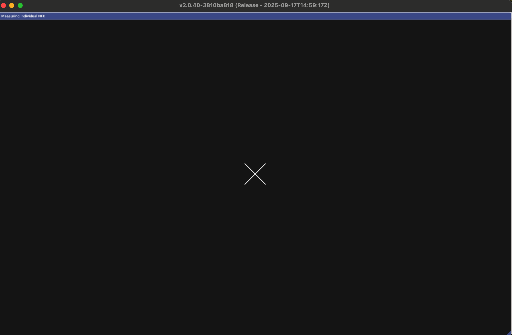
Что происходит: система определяет вашу индивидуальную альфа-частоту (IAPF) — это как «отпечаток пальца» вашего мозга. IAPF — это частота максимального пика альфа-диапазона. У каждого человека альфа-ритм работает на своей частоте (обычно 9.5–11.5 Гц), и эта частота генетически обусловлена на 70–80%. На основе IAPF программа определяет границы вашего индивидуального альфа-диапазона и делит его на два поддиапазона: A1 (от TF до IAPF) и A2 (от IAPF до BF).
Шаг B — Calibrate Baselines (калибровка базовых показателей)
После завершения IAPF-калибровки найдите кнопку Calibrate Baselines в верхней панели:
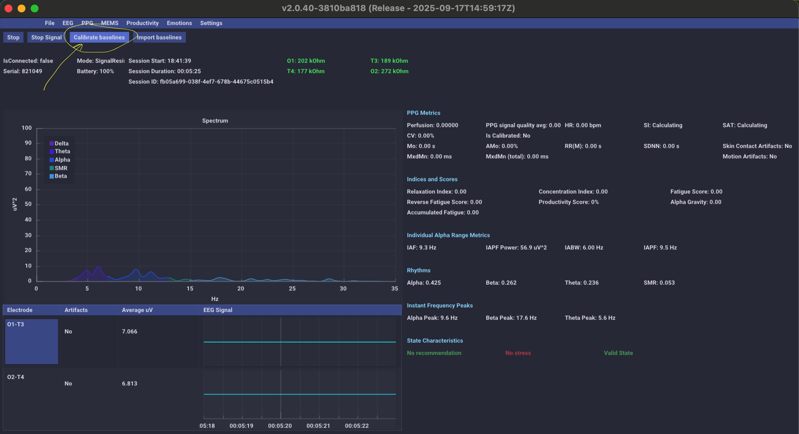
Порядок действий:
- Нажмите кнопку Calibrate Baselines
- Сидите спокойно с открытыми глазами — программа зафиксирует ваши базовые показатели
Что происходит: система запоминает вашу «норму» — базовые уровни (50-й перцентиль = медиана) концентрации, расслабления, утомления, пульса. Например, если ваш Fatigue Score baseline в начале сессии = 1, а через два часа вырос до 2–3, то относительно базового состояния ваша усталость увеличилась на 100–200%.
Важные правила калибровки
- Калибровка делается один раз — данные сохраняются. Повторная калибровка нужна только если вы хотите обновить baseline.
- Не двигайтесь во время калибровки. Даже небольшие движения головой создают артефакты.
- Не разговаривайте. Мышцы лица создают электрические помехи.
- Калибруйтесь в спокойном состоянии. Не сразу после спортзала, не после ссоры, не после литра кофе. Ваша «норма» должна быть действительно нормой.
- Порядок строго важен: сначала IAPF, потом Baselines. Не наоборот.
Твой первый замер и разметка данных
Всё настроено, откалибровано, трекер на голове, контакт хороший. Пора делать замер.
Запуск записи
Запись данных начинается автоматически при подключении трекера. Данные пишутся в фоне с первой секунды — вам не нужно нажимать кнопку «Запись». Но чтобы потом разобраться в экспортированной CSV-таблице — какой момент соответствует какому состоянию — нужна разметка.
Разметка сессии — кнопки Data Markup (1–2–3–4–5)
Это ключевой инструмент для анализа данных. В правой верхней части интерфейса расположены пронумерованные кнопки Data Markup (1–5):
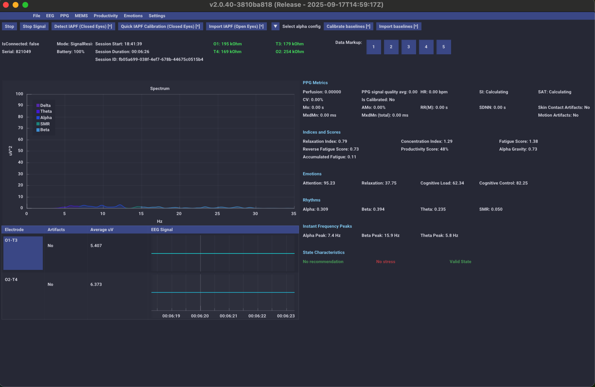
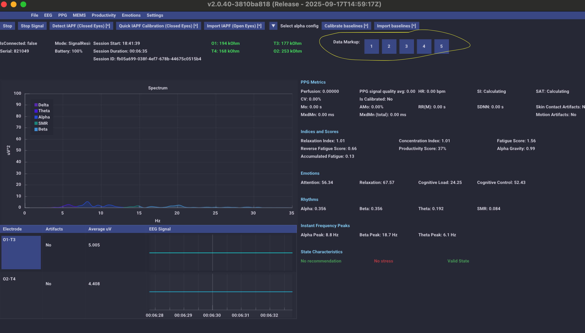
Зачем нужна разметка — принцип работы
Когда вы подключили капсулу — запись данных уже идёт. Программа непрерывно фиксирует все метрики каждую секунду. Но когда вы потом откроете экспортированный CSV-файл, вы увидите тысячи строк с цифрами — и без разметки невозможно понять, где заканчивается одно состояние и начинается другое.
Кнопки Data Markup решают эту проблему: при нажатии кнопки в CSV-таблице появляется маркер с номером (1, 2, 3, 4 или 5), привязанный к конкретному моменту времени. Это позволяет:
- Точно определить с какого момента началась фаза 1 (например, обычное сидение)
- Точно определить с какого момента началась фаза 2 (например, медитация)
- Сравнить метрики до и во время целевого состояния
- Ставить и проверять гипотезы на основе объективных данных
Как использовать разметку — пошагово
| Шаг | Когда нажимать | Какую кнопку | Что это значит в таблице |
|---|---|---|---|
| 1 | Сели, расслабились, трекер на голове | Кнопка 1 | Маркер «фаза 1 — обычное состояние (baseline)» |
| 2 | Начинаете практику / медитацию / задачу | Кнопка 2 | Маркер «фаза 2 — целевое состояние» |
| 3 | Заканчиваете практику (опционально) | Кнопка 3 | Маркер «фаза 3 — завершение» |
| 4–5 | По вашему усмотрению | Кнопки 4, 5 | Дополнительные маркеры для сложных протоколов |
— Нажали 1 — сидите спокойно 5 минут с открытыми глазами (фиксируется ваша «обычная» нервная система)
— Нажали 2 — начинаете практику остановки внутреннего диалога
— Нажали 3 — завершили практику
В CSV-таблице вы потом увидите: все строки от маркера 1 до маркера 2 — это ваше обычное состояние. Все строки от маркера 2 до маркера 3 — это состояние во время практики. Сравнивая метрики между фазами, вы объективно видите: изменилось ли что-то в мозге.
Что видно на экране во время замера
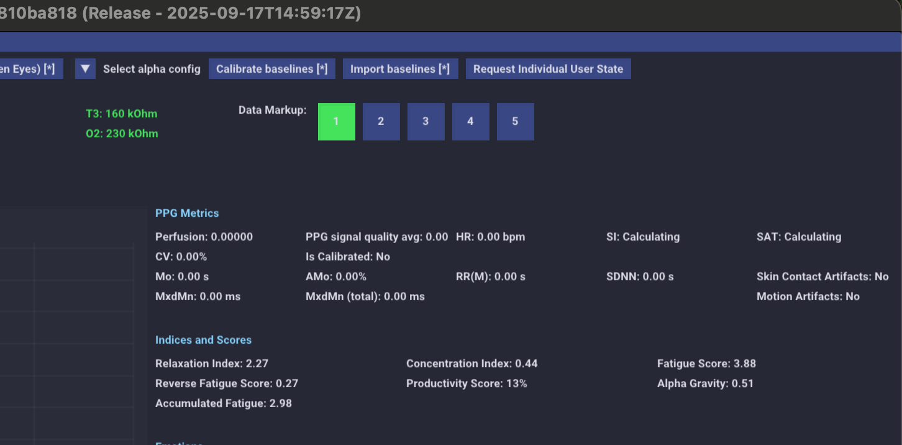
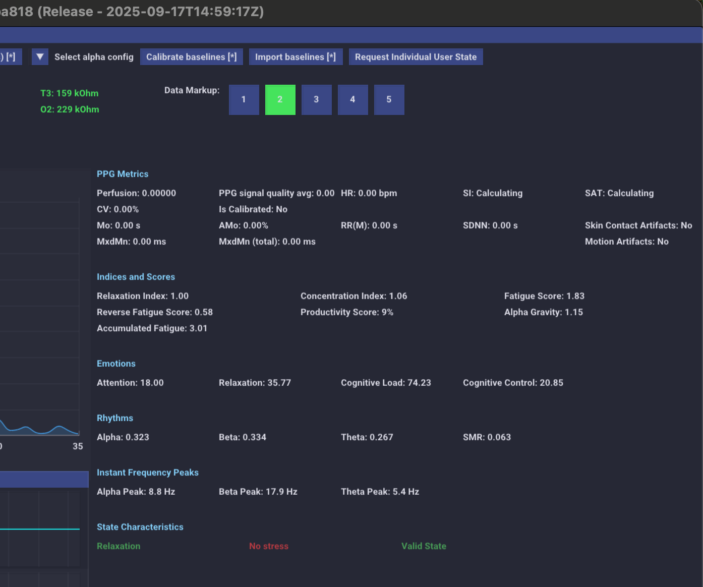
Минимальная длительность замера
- 5 минут на каждую фазу — минимум для корректных данных HRV
- 10+ минут — рекомендуется для показателя Accumulated Fatigue
- Оптимально: 5 минут baseline (кнопка 1) + 15–30 минут практика (кнопка 2)
Что делать во время замера
- Сидите спокойно. Минимизируйте движения головой.
- Не разговаривайте (если это не часть задачи).
- Не трогайте трекер во время записи — сдвинете электроды.
- Не напрягайте мышцы лица — лоб, челюсть, жевательные мышцы создают помехи в бета-диапазоне, и программа может интерпретировать это как «высокую мозговую активность», хотя это просто мышечный шум (артефакт).
Завершение записи
Нажмите кнопку Stop в левом верхнем углу. Данные автоматически сохранятся.
Обзор вкладок интерфейса
Программа Capsule содержит несколько вкладок в верхнем меню, каждая из которых открывает специализированный набор метрик и графиков.
Вкладка EEG — электроэнцефалограмма
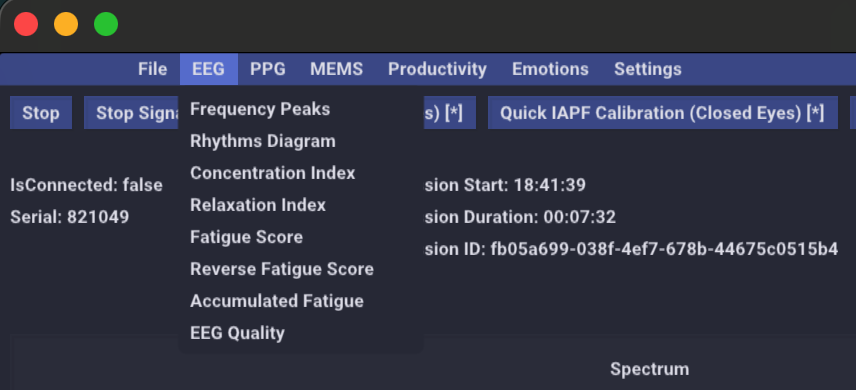
| Пункт меню | Что показывает |
|---|---|
| Frequency Peaks | Пиковые частоты альфа/бета/тета ритмов в реальном времени |
| Rhythms Diagram | Круговая диаграмма соотношения мощностей мозговых ритмов |
| Concentration Index | График индекса концентрации (beta/alpha) относительно baseline |
| Relaxation Index | График индекса расслабления (alpha/beta) относительно baseline |
| Fatigue Score | График утомления (alpha + theta)/beta |
| Reverse Fatigue Score | «Перевёрнутый» индекс — индекс бодрости beta/(alpha + theta) |
| Accumulated Fatigue | Накопленная усталость по 10-балльной шкале с начала сессии |
| EEG Quality | Качество ЭЭГ-сигнала |
Вкладка PPG — фотоплетизмограмма
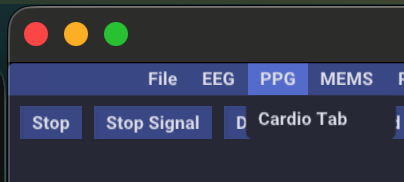
Вкладка PPG содержит Cardio Tab — раздел с кардиометриками:
- Пульс (HR / BPM)
- Вариабельность сердечного ритма (SDNN, pNN50)
- Стресс-индекс Баевского (SI)
- Индекс симпато-адреналового тонуса (SAT)
Вкладка Productivity — продуктивность
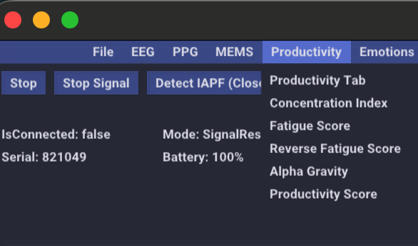
| Пункт меню | Что показывает |
|---|---|
| Productivity Tab | Общий дашборд продуктивности |
| Concentration Index | Индекс концентрации (beta/alpha) |
| Fatigue Score | Индекс утомления |
| Reverse Fatigue Score | Индекс бодрости |
| Alpha Gravity | Показатель «потока» — вовлечённость в деятельность (A2/A1) |
| Productivity Score | Общий показатель продуктивности от 0 до 1 |
Cognitive States — когнитивные состояния
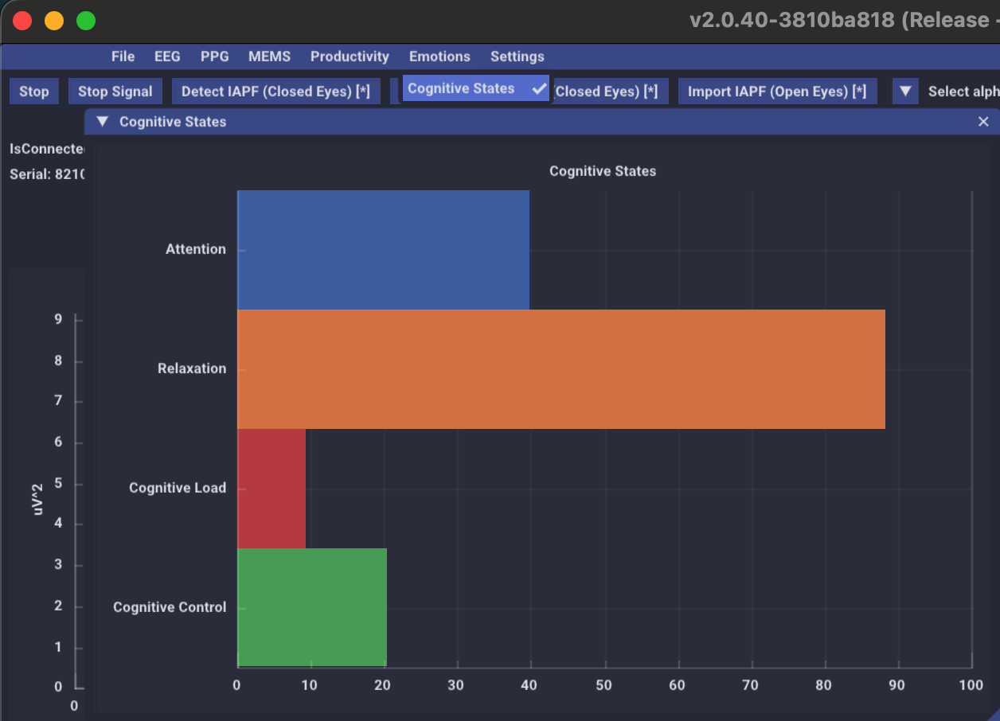
| Состояние | Что показывает | Формула |
|---|---|---|
| Attention | Фокус, вовлечённость, внимание | beta/alpha |
| Relaxation | Расслабленность | alpha/beta |
| Cognitive Load | Когнитивная нагрузка — насколько мозг загружен задачей | theta/alpha |
| Cognitive Control | Способность управлять вниманием и подавлять отвлекающие стимулы | beta/theta |
Экспорт и отправка данных
Экспорт из программы
После завершения замера экспортируйте данные. Нажмите File в верхнем левом углу программы, затем Sessions Data:
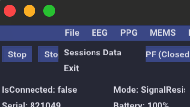
Где хранятся данные
Программа сохраняет все сессии в папку Sessions. Каждая сессия — это отдельная папка с уникальным ID (длинный набор букв и цифр):
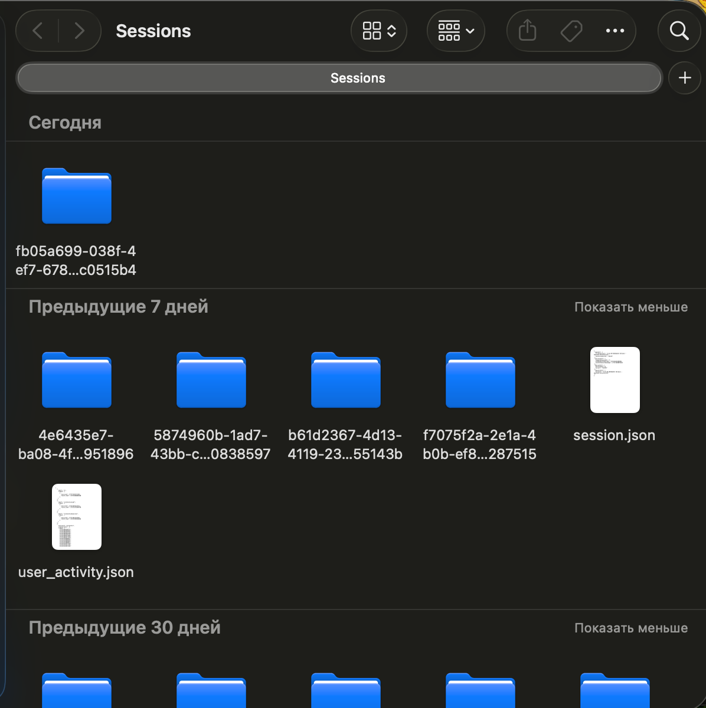
Что внутри папки сессии
Откройте папку конкретной сессии — внутри вы найдёте три файла:
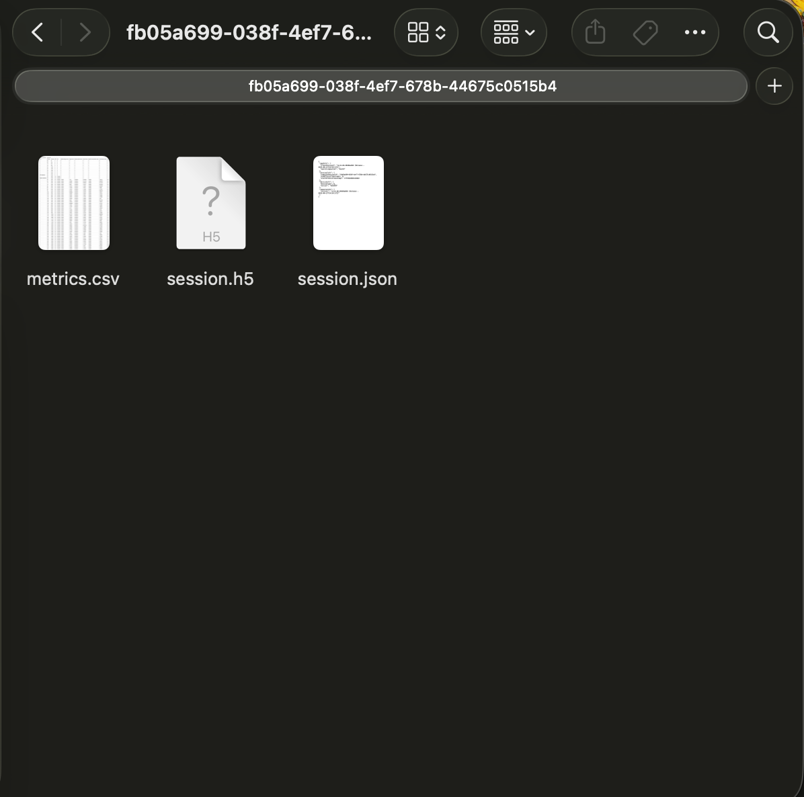
| Файл | Что это | Для чего |
|---|---|---|
| metrics.csv | Таблица с метриками | Главный файл для анализа. Все метрики посекундно, включая маркеры Data Markup |
| session.h5 | HDF5-файл | Сырые данные сигналов (для продвинутого анализа) |
| session.json | JSON-файл | Метаданные сессии (время, настройки, параметры) |
Что будет в CSV-файле
Файл metrics.csv — это таблица, где каждая строка = 30 секунд записи. Столбцы содержат все метрики, которые вы отметили в Write Options:
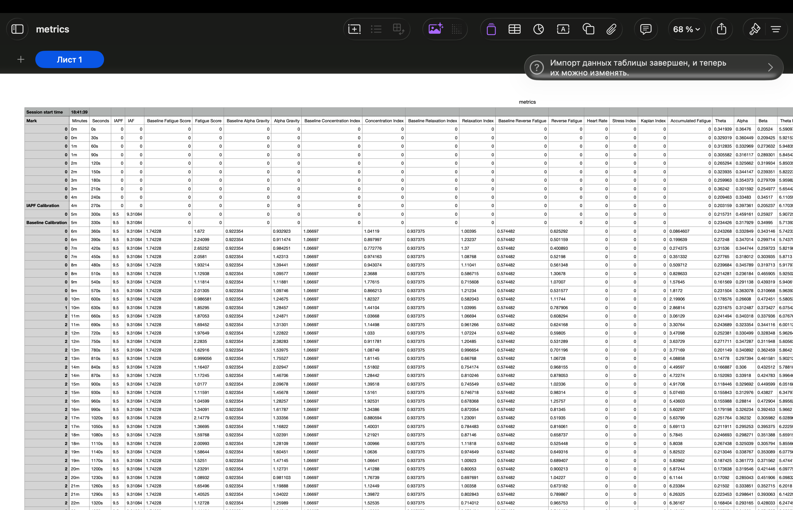
Столбец Mark — как работает разметка в таблице
Самый левый столбец Mark — это и есть ваша разметка Data Markup. Посмотрите внимательно:
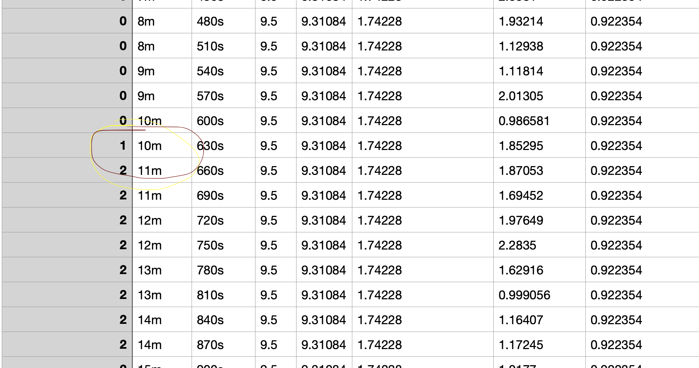
Как читать:
- Mark = 0 — данные до начала разметки (можно игнорировать)
- Mark = 1 — вы нажали кнопку 1. Это ваше обычное состояние (baseline). Все строки с этим маркером — это «до практики»
- Mark = 2 — вы нажали кнопку 2. Это целевое состояние. Все строки с этим маркером — это «во время практики»
Сравнивая средние значения метрик между фазами 1 и 2, вы получаете объективную картину: изменилось ли что-то в мозге во время практики.
Отправка данных куратору
Экспортированный файл metrics.csv отправляйте в бот исследовательской программы:
Бот: @NihiloAI_bot
Следуйте инструкциям бота по загрузке данных.
Типичные проблемы и решения
Трекер не находится по Bluetooth
- Убедитесь, что трекер в режиме сопряжения (быстрое мигание — 4 раза в секунду)
- Убедитесь, что Bluetooth включён на компьютере
- Если используете USB-адаптер — проверьте, что он вставлен и распознан системой
- Перезагрузите Bluetooth на компьютере (выключите и включите)
- Выключите и снова включите трекер, повторите процедуру сопряжения
Артефакты (Artifacts = Yes) всё время
Артефакты — это любое изменение ЭЭГ-сигнала, вызванное внемозговыми факторами: движение, мышечные сокращения, помехи от приборов, плохой контакт.
- Проверьте посадку трекера — электроды должны касаться кожи, а не волос
- Уберите волосы из-под электродов
- Подтяните повязку плотнее
- Не двигайте головой
- Уберитесь подальше от мониторов и электроприборов
- Протрите электроды спиртовой салфеткой
Низкий Perfusion (< 0.5%)
Perfusion — это показатель качества PPG-сигнала (пульса). Низкий Perfusion означает, что оптический датчик плохо «видит» пульс.
- Прижмите PPG-датчик плотнее к коже
- Убедитесь, что между датчиком и кожей нет волос
- Согрейте место контакта (холодная кожа = сужение сосудов = слабый сигнал)
- Если Perfusion устойчиво ниже 0.5% — данные стресс-индексов (SI, SAT) будут ненадёжными
Invalid State
Программа показывает Invalid State — это значит, что одна или несколько критических систем работают некорректно. Данные в этом состоянии нельзя использовать для анализа.
- Проверьте все контакты (электроды + PPG)
- Проверьте, что калибровка была выполнена
- Перезапустите запись
Выбросы в данных
Выброс — это некорректное числовое измерение, которое «проскочило» через фильтр артефактов. Например, если PPG-датчик плохо прижат и шумы ритмичные, алгоритм может увидеть ложные удары сердца. Решение: обеспечьте плотный контакт датчика.
Батарея < 15%
При низком заряде качество передачи данных по Bluetooth может снижаться. Зарядите трекер перед замером.
Программа не запускается на Mac
macOS может заблокировать программу, скачанную не из App Store:
- Откройте Системные настройки → Конфиденциальность и безопасность
- Прокрутите вниз — там будет сообщение о заблокированном приложении
- Нажмите «Всё равно открыть» (Open Anyway)
- При первом запуске может потребоваться подтвердить действие ещё раз
Программа показывает странные данные
- Убедитесь, что вы выполнили обе калибровки (IAPF + Baselines)
- Убедитесь, что Valid State = true
- Убедитесь, что Artifacts = No
- Подождите 1–2 минуты после начала записи — первые секунды данные могут быть нестабильными
Полезные ссылки и контакты
Каналы и боты
| Ресурс | Ссылка | Зачем |
|---|---|---|
| Канал Neiry Capsule | t.me/neurocapsule | Скачивание программы, обновления, запрос ключа |
| Бот тех. поддержки Neiry | t.me/neirybot | Вопросы по программе. Начинайте сообщение с имени менеджера — Даниил |
| Бот исследования | t.me/NihiloAI_bot | Отправка данных замеров |
Документация
| Ресурс | Ссылка |
|---|---|
| Видео-обзор интерфейса Capsule | Яндекс.Диск |
| Полный научный гайд по метрикам | konstantinshell.github.io |
Контакт куратора
По любым вопросам, связанным с исследовательской программой ONTO NOTHING, обращайтесь к Константину Шель — через бот @NihiloAI_bot или в личные сообщения.